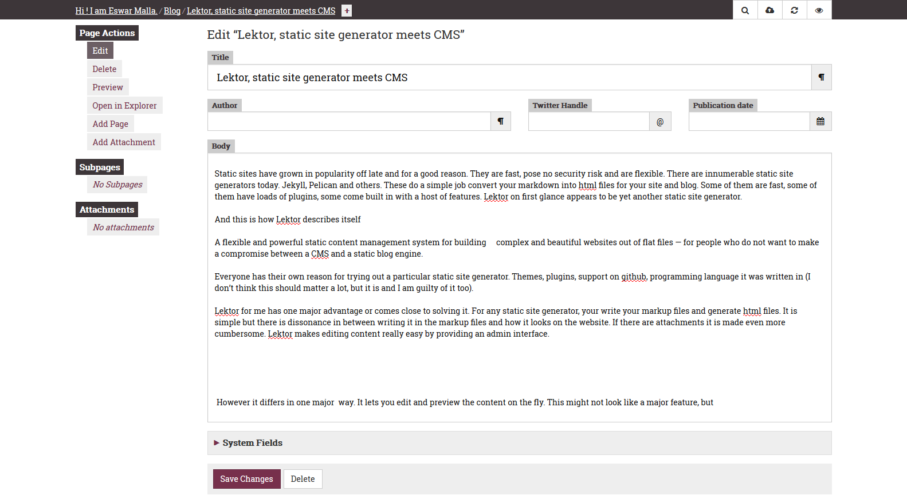
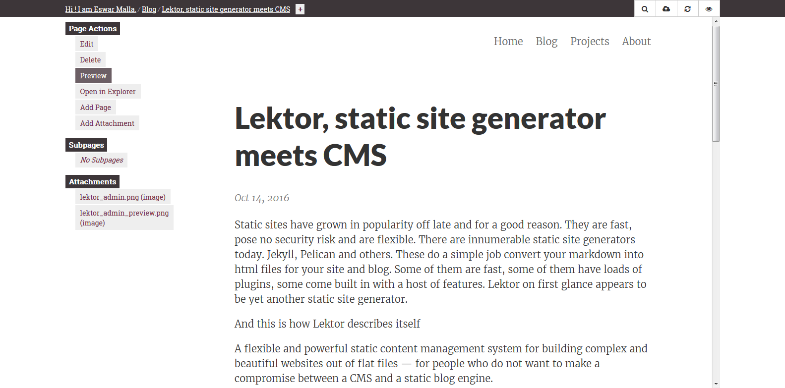

Static sites have grown in popularity off late and for a good reason. They are fast, pose no security risk and are flexible. There are innumerable static site generators today. Jekyll, Pelican and others. These do a simple job convert your markdown into html files for your site and blog. Some of them are fast, some of them have loads of plugins, some come built in with a host of features. Lektor on first glance appears to be yet another static site generator.
And this is how Lektor describes itself
A flexible and powerful static content management system for building complex and beautiful websites out of flat files — for people who do not want to make a compromise between a CMS and a static blog engine.
Everyone has their own reason for trying out a particular static site generator. Themes, plugins, support on github, programming language it was written in (I don’t think this should matter a lot, but it seems to).
Lektor for me has one major advantage or comes close to solving it. For any static site generator, your write your markup files and generate html files. It is simple but there is dissonance in between writing it in the markup files and how it looks on the website. If there are attachments it is made even more cumbersome. Lektor makes editing content really easy by providing an admin interface.

The preview is also built in

Give it a shot, its open source and free.